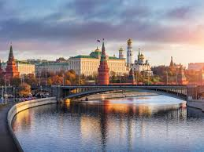

Moscú

Moscú, la capital de Rusia, es una ciudad vibrante que combina la historia, la cultura y la modernidad. Los puntos destacados incluyen el Kremlin de Moscú, la Plaza Roja, la Catedral de San Basilio y el Teatro Bolshoi, entre otros sitios icónicos.
San Petersburgo

San Petersburgo, conocida como la "Venecia del Norte", es famosa por su arquitectura barroca, canales y museos de clase mundial. Los visitantes pueden explorar el Hermitage, el Palacio de Invierno, la Catedral de San Isaac y el Palacio de Peterhof, entre otros lugares impresionantes.
Siberia
Siberia, la vasta región en el norte de Rusia, es conocida por sus paisajes naturales impresionantes, que incluyen montañas, ríos, lagos y bosques. Los visitantes pueden disfrutar de actividades al aire libre como senderismo, pesca, esquí y avistamiento de vida silvestre.